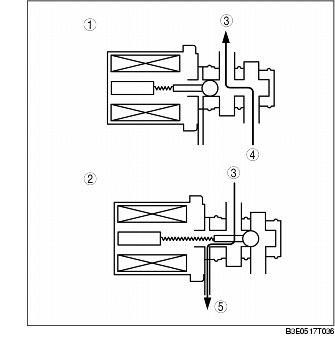

Shift solenoid A, B and C (duty-cycle type) operation
OPEN : When the electrical current does not flow, the supply port (line pressure) in the solenoid opens and is engaged with the output port (clutch pressure). As a result, hydraulic pressure is supplied to the hydraulic passage for the clutch pressure.
CLOSE : When the electrical current flows, the supply port (line pressure) in the solenoid closes and the output port (clutch pressure) and the drain port are engaged to drain the clutch pressure.
